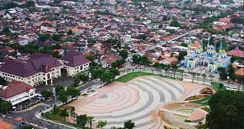
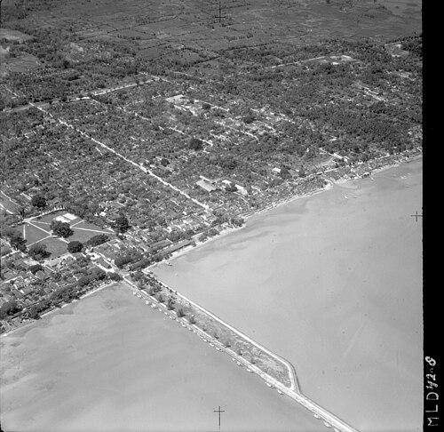

This is my
Hometown
Tuban (also often referred to as Tuban City) is a subdistrict on the northern coast that serves as the capital of Tuban Regency, making it both the smallest in area and the most densely populated. As the administrative center traversed by the strategic Pantura route—connecting Semarang, Surabaya, Brondong, and Babat—this subdistrict is equipped with key infrastructure such as the Alun-alun, the Grand Mosque, Pasar Baru, and various government offices. Behind its current role, Tuban holds a rich history as one of the most advanced port cities and a stopover for international merchant ships during the Majapahit Kingdom era, before port activities were eventually relocated to Surabaya during the Dutch colonial era. Today, this former maritime area has been transformed into a fishing village and the tourist attraction known as Boom Beach, complementing the city’s rich historical heritage sites such as the Kambang Putih Museum, the Tomb of Ranggalawe—Tuban’s first duke— and the Tomb of Sunan Bonang, who played a crucial role in the spread of Islam on the island of Java.

History
In ancient times, the northern coastal region of Java was a bustling area because it lay along international trade routes. One of the major port cities of that era was Tuban, which was frequently visited by ships from all over the world. In 1293 CE, Ranggalawe was appointed Duke of Tuban for his services in helping Raden Wijaya establish the Majapahit Kingdom. This event took place on November 12, which is commemorated annually as Tuban’s Founding Day. The port of Tuban was conquered by the Demak Sultanate in the 16th century, and its popularity gradually declined due to siltation that made it difficult for ships to dock, as well as the relocation of port activities to other cities such as Jepara during the Demak period and Surabaya during the Dutch East Indies era. During the Dutch colonial period, Tuban was part of the Rembang Residency. Tuban itself was led by a native regent and assisted by a Dutch Assistant Resident.